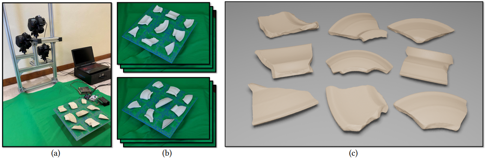
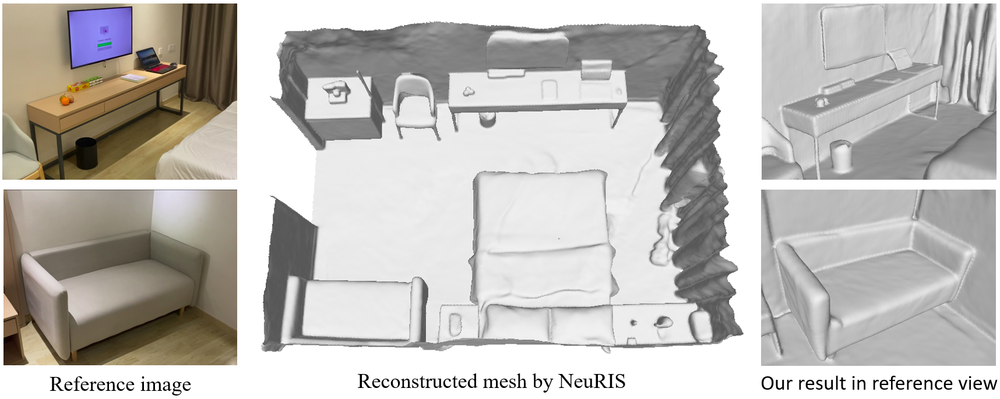
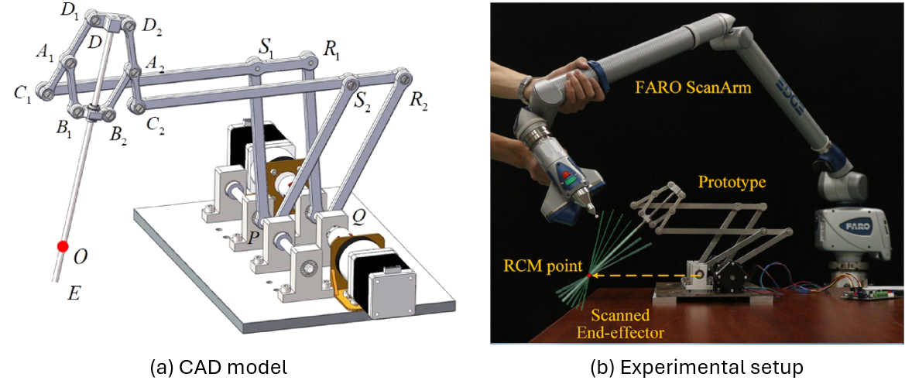
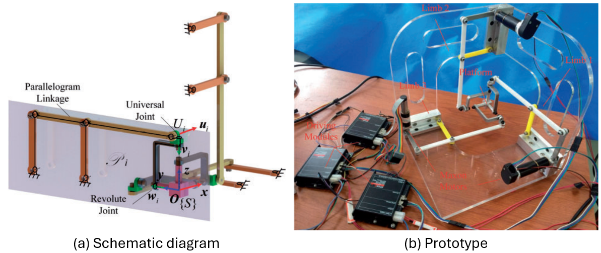

Publications
|  |
Batch-based Model Registration for Fast 3D Sherd Reconstruction
ICCV 2023
|
|
|
NeRO: Neural Geometry and BRDF Reconstruction of Reflective Objects from Multiview Images
SIGGRAPH 2023
|
|  |
NeuRIS: Neural Reconstruction of Indoor Scenes Using Normal Priors
ECCV 2022
|
|  |
A New Type of Planar Two Degree-of-Freedom Remote Center-of-Motion Mechanism Inspired by the Peaucellier–Lipkin Straight-Line Linkage
Journal of Mechanical Design, 2018
|
|  |
Design and kinematic analysis of a spherical parallel manipulator using concurrent planar parallelogram linkages
Journal of Mechanical Engineering Science, 2018
|